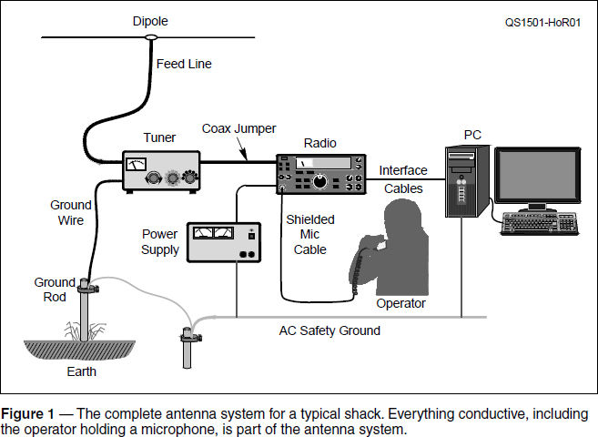
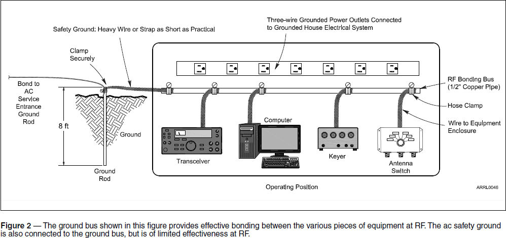

Experiment #144 — The Myth of RF Ground
Sooner or later, just about every ham who builds an HF station — whether it’s at home, in the car, at Field Day, or for portable operation — experiences the rite of passage called an RF burn. Although painful, it rarely creates a physical mark, just a certain wariness on the part of the burn-ee. What’s happening here?
You just had an exciting encounter with a high-impedance point on your antenna system. Impedance being the ratio of voltage to current, when power is applied, a high RF voltage will be present at these points. Who says you can’t feel RF? “But wait,” you exclaim, “the antenna is up in the air and connected to the antenna tuner! I’m not touching my antenna system!”
Oh yes, you are! Unless your station is built inside an RF-tight metal enclosure or is otherwise isolated from the antenna and feed line, every coax shield, every enclosure, every unshielded wire…anything connected to the transmitter directly or indirectly should be treated as part of the antenna system. That includes you when touching any of those conductors! Take a look at Figure 1, which shows a typical home station. Everything in that figure is part of the antenna system of that station.

If the station is operating on 10 meters, at least one potential hot spot is never more than about 8 feet away. Why? Consider the wavelength at 28 MHz. It’s 33.4 feet and ¼ wavelength is approximately 8.3 feet. When a conductor is excited by RF, either directly from a signal source or by picking up radiated energy, a pattern of peaks and nulls for both voltage and current is created. Peaks are ½-wavelength apart and so are the nulls, with peaks and nulls offset ¼-wavelength apart. Whether the conductor happens to be a wire, the outer surface of a coax shield, an equipment enclosure, or a “ground” wire makes no difference. It’s all a conducting surface as far as the RF is concerned, regardless of what we call it.
While less dramatic than “getting bit,” one has to watch out for RF currents, too. Any time the voltage “over here” is different than the voltage “over there,” current will flow. When the current flows on the outside of an enclosure or coax shield, it’s generally not a big problem. The fun begins when it finds a way into the electronics via an unshielded connection (like a power cord) or an improperly connected shield that conducts the current inside an enclosure instead of keeping it outside. RF that’s where it shouldn’t be can wreak havoc with a circuit’s operation: audio gets garbled, keyboards stop working, control interfaces stop controlling.1
The situation gets particularly interesting when instead of a coax-fed dipole, the antenna wire itself is connected directly to the antenna tuner. This type of connection is often used for portable operating as an “end-fed” or “random wire” antenna with a “counterpoise” (a piece of wire laid on the ground or floor) replacing the ground rod. In this case, the antenna itself consists of everything from the end of the counterpoise to the end of the wire in the air. The equipment and operator are thus all connected to the feed point of the antenna. Imagine the feed point of the dipole in Figure 1 being connected right at the output of the antenna tuner and you get the idea. This also explains why the results of using these directly fed antennas can be inconsistent, because there is so much variation in what the antenna system actually consists of.
Obviously, we would like to control the RF voltages and currents so they don’t cause our equipment to malfunction or burn our fingers. The natural tendency is to think, “I’ll just ground everything and it will be at zero volts — problem solved!” Not so fast! You’re partly right, but we have a failure to communicate, as they say.
Grounding and Bonding
There are grounds and then there are grounds. Consider the actual ground, the soil itself. The Earth acts as a “zero voltage reference” for ac power and low-frequency systems. The ac safety ground in your home consists of the power wiring’s ground wire (bare or with green insulation), which is connected to the Earth through a ground rod that is connected to the main circuit breaker panel. The ac neutral of a typical two-phase home is also connected to this same ground. (See the National Electrical Code and your local building codes for a complete description of what is required in your particular circumstances.)
Any exposed conductive enclosure of an appliance or machine — including your radio equipment — should be connected to the ac safety ground to conduct fault or leakage current away from you and back to the Earth. It is this current flow that trips Ground Fault Circuit Interrupter (GFCI) circuit breakers.
The purpose of the ac safety ground has nothing to do with RF and it should never be expected to act as any kind of voltage reference above a few hundred kilohertz. That means even if all of your equipment is properly grounded for ac safety, you still have no control over RF voltages and currents. In fact, as Figure 1 illustrates, the ac safety wiring is a part of your antenna system, too.
What if you install a ground rod outside the station and run wide copper strap to it like all the literature tells you? There is another word for ground connections and that is “antenna!” Any ground connection longer than about 1⁄10 of a wavelength begins to act like an antenna, including transmission line-like effects. If the electrical length is close to ¼ wavelength (or any odd number of ¼ wavelengths) the impedance of the wire becomes very high, effectively becoming a resonant open circuit.
Back in the days when most amateurs operated below 15 MHz, a few feet of wire was electrically short enough to serve as a common connection. As operation at shorter wavelengths became more common, the connection to a ground rod got electrically longer and less effective. Hams with shacks on an upper floor had (and have) the same problem at any frequency.
The solution is to stop looking for the elusive “zero voltage connection” at RF. The Earth is not a magic drain into which all of our unwanted RF can be poured via a wire. An electrically long connection to the Earth is useless at RF and often causes RF-related problems. Let’s go back to what the problem really is: we have places in the shack where high RF voltage exists and RF voltage differences that cause RF current to flow. These problems can be addressed by bonding.
Bonding sounds heavy-duty (and expensive) but all it really consists of is connecting equipment enclosures together with short conductors so they have the same voltage. This is partially taken care of by the low-impedance connection provided by shields of coaxial cables between equipment.
However, accessories, computers, and power supplies generally aren’t connected together with coax, so we have to provide another path. A common solution (shown in Figure 2) is to provide a wide, flat common ground bus at the back of or even under the shack equipment. Each piece of equipment, including computers and other non-radio electronics, is then connected to the bus with a short wire or strap.2 To accomplish the purpose of RF bonding, no other connections are required.

It is a good idea to add a connection to the ac safety ground from the ground bus or to use it as part of a lightning protection system, but the effect of that connection at RF will be unpredictable due to the configuration of the entire antenna system, as discussed earlier. From an RF perspective, keeping all of the equipment as close as possible to the same voltage is the important thing.
Bonding will not result in there being zero RF voltage on the equipment. Bonding does keep all of the equipment at about the same voltage, so RF current flow between pieces of equipment is greatly reduced with the added benefit of reducing the effect of lightning-caused voltage surges that affect the station ground connection.3
Next month we will talk about shielding, both of devices and of cables, and how this affects resistance to RFI.
Notes
1Poorly shielded connections and equipment will radiate RF from internal electronics, too. This creates on-the-air interference.
2Avoid using coax braid as an RF connection. Once removed from the protection of the confining jacket, the braid’s individual strands begin to loosen and corrode, increasing the impedance at RF. Use heavy wire or solid strap, such as copper flashing, for best results.
3W. Ronald Block, KB2UYT, “Lightning Protection for the Amateur Radio Stations, Parts 1-3,” Jun, Jul, and Aug 2002, QST.